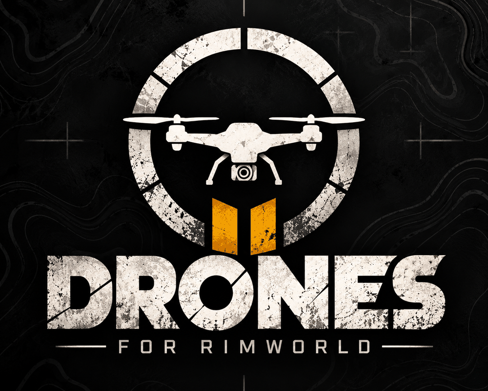
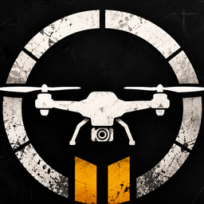
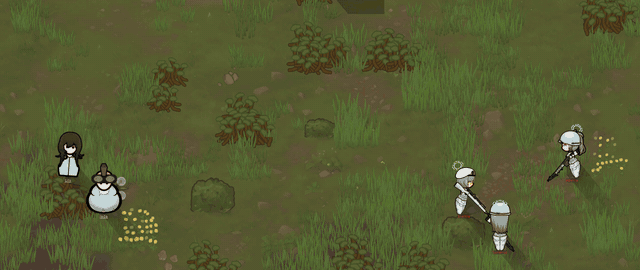
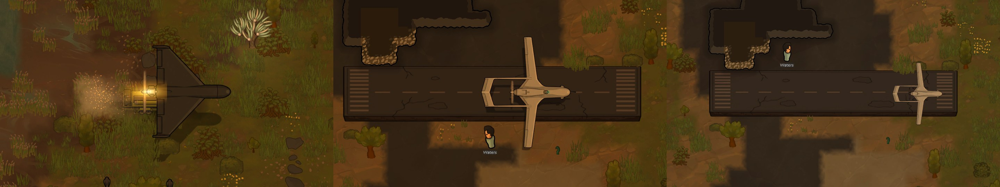
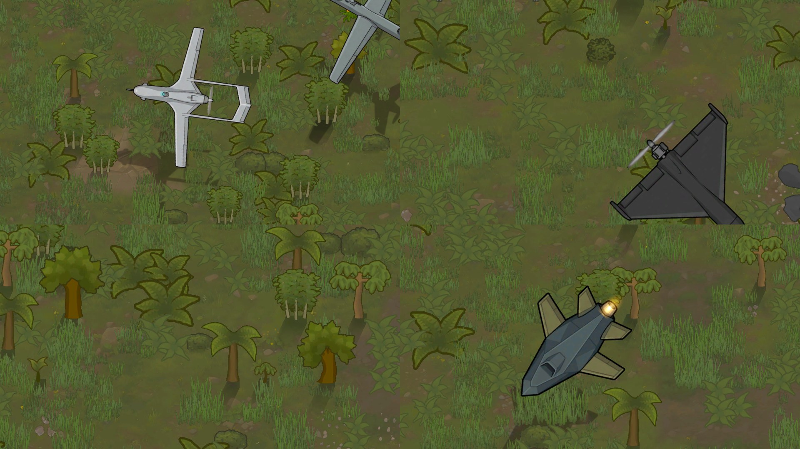
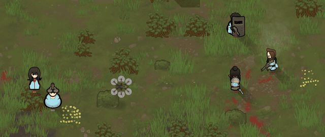
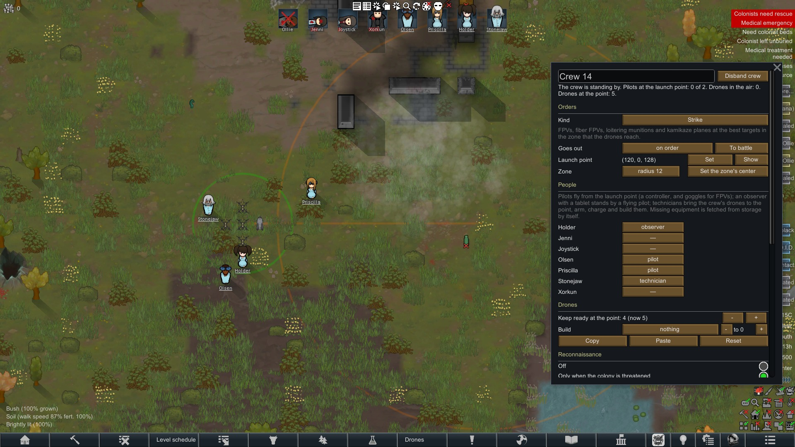
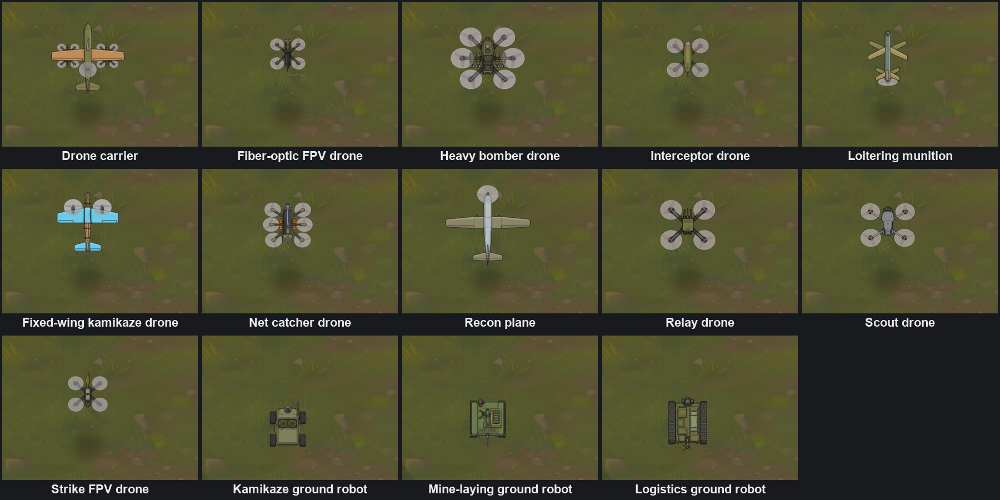

Modern Drone Warfare
A RimWorld mod
Drone warfare the way it really works: you don't just build drones, you fly them — with crews of pilots, observers and technicians, over a radio link that walls, woods, weather and jamming can break.
Get it on the Steam Workshop ManualWhat may surprise you
- Crews fight on their own: on alarm they drop their work, run to the launch point and take off; technicians build, arm and charge the drones.
- The link is everything. Five real radio kits, each with its own range and picture, and the enemy retunes its jammers to the ones you fly on most. Fiber-optic FPVs ignore jamming but drag a cable across the map: cut it and the drone goes blind.
- The enemy hunts your operators by direction finding; your video receiver shows where its FPV is heading.
- Night raids by Shahed / Geran-class drones off launch rails, strikes back on the world map, TB2-class planes rolling down a runway.
- What is mounted is what you see: warheads, drops and the satellite modem are drawn on the drone. Real prototype names for your side: Ukrainian, Russian or Western.
- Air defense from jammer guns and nets to flak, lasers, microwaves and GPS spoofing — and your own EW can blind your own drones.
Support the author
The mod is free and stays free. If you enjoy it and want to help it grow, here is how — thank you!
Russia and CIS
Crypto · USDT (BEP20 / BSC)
0x6f64350f5b2781a2c7af12af5cf2f8a24715cf53Only USDT on BNB Smart Chain (BEP20) — other networks or tokens will be lost.
This mod is about the mechanics of drone warfare, not about politics.
Modern Drone Warfare
Un mod para RimWorld
La guerra de drones tal y como funciona de verdad: no basta con fabricar drones, hay que pilotarlos, con dotaciones de pilotos, observadores y técnicos, a través de un enlace de radio que pueden cortar muros, bosques, el clima y la guerra electrónica.
Descárgalo en Steam Workshop ManualLo que puede sorprenderte
- Las dotaciones combaten solas: con la alarma dejan su trabajo, corren al punto de lanzamiento y despegan; los técnicos fabrican, arman y cargan los drones.
- El enlace lo es todo. Cinco kits de radio reales, cada uno con su alcance y su imagen, y el enemigo resintoniza sus inhibidores a los que más usas. Los FPV de fibra óptica ignoran la interferencia, pero arrastran un cable por el mapa: córtalo y el dron queda ciego.
- El enemigo caza a tus operadores por radiogoniometría; tu receptor de vídeo muestra hacia dónde va su FPV.
- Ataques nocturnos de drones tipo Shahed / Geran lanzados desde rampas, contraataques en el mapa del mundo, aviones tipo TB2 que despegan desde una pista.
- Lo que lleva montado es lo que ves: ojivas, cargas de lanzamiento y el módem satelital se dibujan sobre el dron. Nombres de prototipos reales para tu bando: ucraniano, ruso u occidental.
- Defensa antiaérea desde fusiles inhibidores y redes hasta antiaéreos, láseres, microondas y suplantación de GPS; y tu propia guerra electrónica puede cegar a tus propios drones.
Apoya al autor
El mod es gratuito y lo seguirá siendo. Si te gusta y quieres ayudarlo a crecer, así puedes hacerlo. ¡Gracias!
Rusia y la CEI
Cripto · USDT (BEP20 / BSC)
0x6f64350f5b2781a2c7af12af5cf2f8a24715cf53Solo USDT en BNB Smart Chain (BEP20): otras redes o tokens se perderán.
Este mod trata de la mecánica de la guerra de drones, no de política.
Сучасна безпілотна війна
Мод для RimWorld
Війна дронів така, якою вона є: дрони мало збудувати, ними треба літати — розрахунками з пілотів, спостерігачів і техніків, через радіозв'язок, який рвуть стіни, ліс, погода й РЕБ.
Завантажити в Steam Workshop ПосібникЧим може здивувати
- Екіпажі воюють самі: за тривогою кидають роботу, біжать на точку й злітають; техніки збирають, споряджають і заряджають дрони.
- Зв'язок вирішує все. П'ять реальних радіокомплектів зі своєю дальністю й картинкою, а ворог перебудовує глушилки під ті, на яких ви літаєте найчастіше. Оптоволоконний FPV не боїться РЕБ, але тягне кабель через усю мапу: переріжте — і дрон осліп.
- Ворог пеленгує ваших операторів, а ваш відеоприймач показує, куди летить його FPV.
- Нічні нальоти «Шахедів» із пускових напрямних, удари у відповідь по мапі світу, літаки класу TB2 з розбігом по злітній смузі.
- Що підвішено, те й видно: БЧ, скиди й супутниковий модем намальовані на дроні. Назви реальних прототипів вашої сторони: українські, російські або західні.
- ППО від РЕБ-рушниць і сіток до зеніток, лазерів, НВЧ і підміни GPS — а своя РЕБ може осліпити власні дрони.
Підтримати автора
Мод безкоштовний і таким залишиться. Якщо він вам подобається і ви хочете допомогти йому рости — ось як. Дякую!
Росія та СНД
Крипта · USDT (BEP20 / BSC)
0x6f64350f5b2781a2c7af12af5cf2f8a24715cf53Лише USDT у мережі BNB Smart Chain (BEP20) — інші мережі чи токени буде втрачено.
Мод — про механіку війни дронів, а не про політику.
Современная беспилотная война
Мод для RimWorld
Война дронов такой, какая она есть: дроны мало построить, ими надо летать — расчётами из пилотов, наблюдателей и техников, по радиосвязи, которую рвут стены, лес, погода и РЭБ.
Скачать в Steam Workshop РуководствоЧем может удивить
- Экипажи воюют сами: по тревоге бросают работу, бегут на точку и взлетают; техники собирают, снаряжают и заряжают дроны.
- Связь решает всё. Пять реальных радиокомплектов со своей дальностью и картинкой, а враг перестраивает глушилки под те, на которых вы летаете чаще. Оптоволоконный FPV не боится РЭБ, но тянет кабель через всю карту: перережьте — и дрон ослеп.
- Враг пеленгует ваших операторов, а ваш видеоприёмник показывает, куда летит его FPV.
- Ночные налёты «Шахедов» с пусковых направляющих, ответные удары по карте мира, самолёты класса TB2 с разбегом по взлётной полосе.
- Что подвешено, то и видно: БЧ, сбросы и спутниковый модем нарисованы на дроне. Названия реальных прототипов вашей стороны: украинские, российские или западные.
- ПВО от РЭБ-ружей и сетей до зениток, лазеров, СВЧ и подмены GPS — а своя РЭБ может ослепить свои же дроны.
Поддержать автора
Мод бесплатный и останется таким. Если он вам нравится и хочется помочь ему расти — вот как. Спасибо!
Россия и СНГ
Крипта · USDT (BEP20 / BSC)
0x6f64350f5b2781a2c7af12af5cf2f8a24715cf53Только USDT в сети BNB Smart Chain (BEP20) — другие сети или токены будут потеряны.
Мод — про механику войны дронов, а не про политику.
现代无人机战争
RimWorld 模组
还原真实的无人机战争：你不仅要制造无人机，还要驾驶它们——由操控员、观察员和技工组成机组，通过无线电链路进行操控，而墙壁、树林、天气和电子干扰都可能切断链路。
前往 Steam 创意工坊订阅 手册可能会让你感到惊喜的内容
- 机组自主作战：警报拉响时，他们会放下手头的工作，跑向放飞点并起飞无人机；技工负责制造、装填和为无人机充电。
- 链路就是一切。五种真实的无线电套件，各有不同的航程与图传画面，敌人会监听并调整其干扰机，专门针对你最常用的频段。光纤FPV无视干扰，但会在地图上拖拽一根光缆：一旦光缆被割断，无人机就会失去视野。
- 敌人会通过无线电测向来猎杀你的操控员；而你的视频接收器也能显示敌方FPV的飞行方向。
- 沙赫德 / 天竺葵级别无人机的夜间空袭：监听频道会发出预警，随后一波无人机将扑向你的发电厂。你可以从自己的发射器在世界地图上发起反击，或者在殖民地上空保持一架Bayraktar TB2级别的飞机警戒。
- 所见即所挂：战斗部、空投物资和卫星调制解调器都会直接渲染在无人机上。己方装备采用真实的现实原型名称：乌克兰、俄罗斯或西方装备。
- 防空手段从干扰枪和捕网，到高射炮、激光、微波和GPS欺骗应有尽有——而且你自己的电子战设备也可能致盲你自己的无人机。
支持作者
本模组免费，并将一直免费。如果你喜欢它并想帮助它继续发展，可以通过以下方式支持——谢谢！
俄罗斯及独联体
加密货币 · USDT (BEP20 / BSC)
0x6f64350f5b2781a2c7af12af5cf2f8a24715cf53仅限 BNB 智能链（BEP20）上的 USDT——其他网络或代币将会丢失。
本模组探讨的是无人机战争的机制，无关政治。简体中文翻译：洛阳花落。





